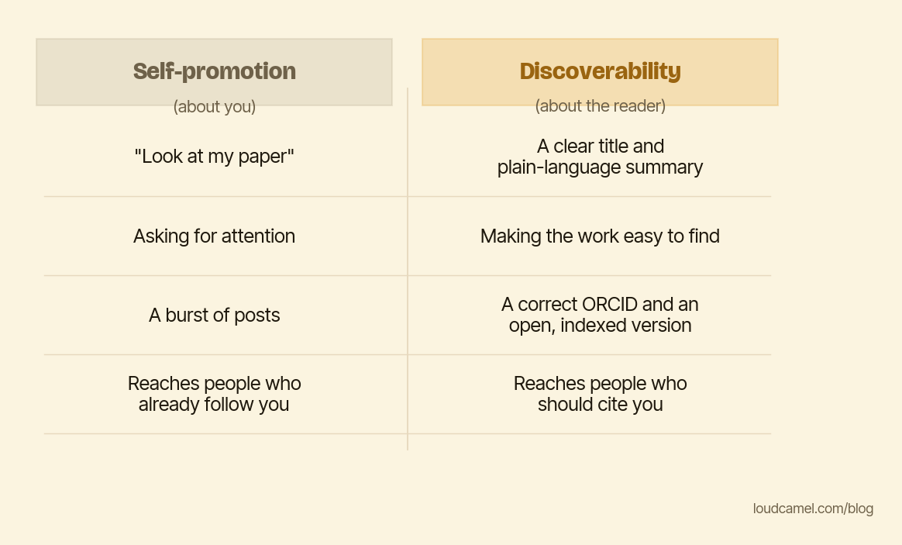

The most effective visibility work doesn't look like self-promotion
Plenty of good researchers will not promote their work, and they have a reason. Self-promotion feels vain. It feels like the thing serious people do not stoop to. “Look at me” is not why they got into science.
Keep that objection. It does not actually cost you anything, and that is the point of this post. The visibility work with the highest payoff is not self-promotion. It is something else, and most people never separate the two.
Two different jobs wearing one name
Self-promotion is about you. It broadcasts, it asks for attention, it requests that people stop what they are doing and notice you. A burst of posts. A “check out my new paper.”
Discoverability is about the reader. It does not ask for anything. It makes the work easy to find, and easy to understand once found. A clean title. A plain-language summary. A correct identifier so every paper you have written lands in one place.

The comparison above lays the two out side by side. The skeptic’s whole objection lives in the left column. None of it touches the right.
The right column is service work
Look at what discoverability actually requires, and notice that not one item involves bragging.
A consistent, correct author identifier, an ORCID that is the same everywhere, profiles that match, so your work is unambiguously attributed and pulled together instead of scattered under three spellings of your name.
A title that is specific and light on jargon, plus a plain-language summary a non-specialist can parse. That non-specialist might be a journalist, a funder, a grad student in the next field over, a search engine, or an AI assistant answering a question about your topic. All of them need prose they can actually read.
Structured, machine-readable metadata and an open version, so the work can be indexed and retrieved at all. And a link or two from places that already rank, so the thing can be found by someone who was not already looking for it.
This is editorial and infrastructural work. It is a service to the field. It happens to be exactly what makes you visible, but that is a side effect, not a sales pitch.
Accessibility, not volume, moves the needle
Here is the part the “just promote it harder” advice misses. McKinley, Baranowski, and Cichocki (Applied Linguistics Review, 2025) looked at what drove engagement with research articles. The articles that did best were not the ones pushed hardest. They were the ones that were both open access and accompanied by a plain-language summary. Removing the paywall alone was not enough. If the prose stayed dense, the open version still sat there.
That inverts the usual advice. The lever was not louder promotion. It was making the framing accessible, meeting the reader where they are. And accessibility is invisible until you do it. Depositing a paper does not mean anyone finds it. Repository records often rank poorly in search, “published” and “findable” are not the same state, and the quiet infrastructure work is the entire distance between them. Nobody claps when you fix it, which is rather the point.
Do this this week
You can refuse to ever post “look at my brilliant paper” and still write the title that lets the right person find it. You can find self-promotion distasteful and still give a reader a clean summary, a working link, a correct attribution. What determines whether humans and machines surface your work is not your willingness to brag. It is whether the infrastructure is there. (This is most of what we do at Loud Camel, for what it is worth, the unglamorous half. The related case for doing it at all is in Is it ethical to use AI to promote your research.)
So do one piece of pure infrastructure work this week, with zero bragging in it. Write a 150-word plain-language summary of your best paper and put it where the work lives. Or fix your author profile so every paper you have written is correctly attributed in one place. No “look at me” required.